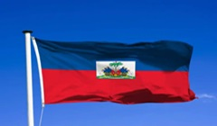
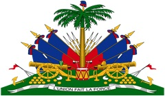

Haiti est un pays de la caraibe, a une superficie de 27 750 km2 (10 714 milles carres), le troisieme plus grand pays des Caraibes en termes de superficie et a une population estime a 11,4 millions d'habitants, ce qui en fait le pays le plus peuple des Caraibes. La capitale est Port-au-Prince. Au debut L'ile etait habitee par le peuple indigene Taino, originaire d'Amerique du Sud. Les premiers Europeens arriverent le 5 decembre 1492 lors du premier voyage de Christophe Colomb. Il fonda par la suite la premiere colonie europeenne en Amerique. Sur la cote Nord-Est d'Haiti Speciquement Mole Saint Nicolas a l'epoque La Navidad, l'ile a ete revendiquee par l'Espagne et nommee Ispanola c'est-a-dire petite Espagne, faisant partie de l'Empire espagnol jusqu'au debut du XVIIe siecle. Les Francais a l'epoque organiserent un mouvement sur mer qu'on appellait des pirates, pour pillers les bateaux en haute mer (les boucanniers et les flubustiers). Ils ferent un pied a terre, c'est alors les francais conduisirent a la cession de la partie occidentale de l'ile a la France en 1697, qui fut par la suite nommee Saint-Domingue. Les colons francais ont etabli des plantations des canne a sucre lucratives, exploitees par un grand nombre d'esclaves amenes d'Afrique, ce qui a fait de la colonie l'une des plus riches ou plus prospere du monde. Le drapeau d'Haiti a ete officiellement adopte le 17 fevrier 1986 mais a ete deja cree en 1803. Il est compose principalement de la couleur bleue et de la couleur rouge. Au milieu du drapeau se trouve les armoiries de la Republique. Elles sont constituees par un palmiste surmonte d'un bonnet de la liberte et d'un trophee d'armes. Une legende y est inscrite explicitement disant L'Union fait la Force.En 1803, le 08 mai, un congres est organise. Il est connu sous le nom du congres de l'Arcahaie dans lequel sont regroupes l'ensemble des chefs de la Revolution haitienne. Un membre du congres connu sous le nom de Jean-Jacques Dessalines effectua un geste qui marquera les esprits ce jour-la. Le pays etant sous la direction des Francais, ce dernier comme etait le drapeau du pays a l'epoque. Dessalines dechira le drapeau francais et pris bien soin de selectionner en suivant les lignes des bandes verticales. Il prit la bande blanche qui se trouvait au milieu. Catherine Flon prit alors les deux bandes restantes et les unifia pour donner ensuitele drapeau d'Haiti.On a fait coudre les deux moities restantes, c'est une representation de l'union des mulatres et des noirs. La Republique de Haiti a ete cree en meme temps que ces gestes symboliques effectues. L'ancien drapeau qui avait pris sa ressemblancea celui de la France n'existe plus. La partie blanche dechiree est delaissee car etant prise comme le symbole de la race blanche.

